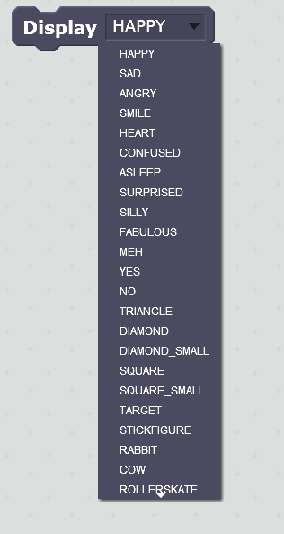
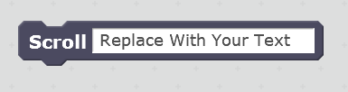
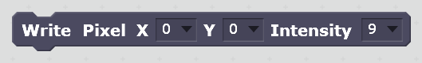
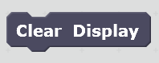
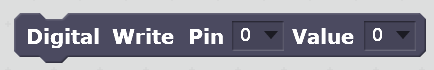
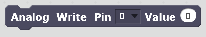
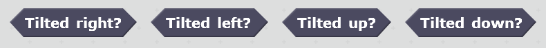
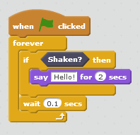
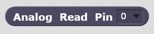

The s2m Blocks
This section describes the custom Scratch blocks added to the More Blocks section in the Scratch editor.
Display
This command block allows you to select and display an image on the micro:bit LED display.

Scroll Text
This command block allows you to enter text that will be scrolled across the LED display.

Write Pixel
This command block allows you to control each individual pixel on the LED display. A pixel is chosen by specifying its x or horizontal position, y or vertical position, and its intensity or brightness.
An x value of 0 is the left most column and 4 is the right most.
A y value of 0 is top row and 4 is the bottom row.
An intensity value of 0 is the lowest level and 9 is the highest.

Clear Display
This command block will immediately turn all LED pixels off.

Digital Write
This command block allows you to set pins 0, 1, or 2 to a value of 0 or 1.

Analog Write
This command block allows you to set pins 0, 1, or 2 to a value of 0 to 1023.

Button Pressed
These binary reporter blocks report if their associated button is pressed or not. They return a value of "true" if pressed and "false" if not.

Tilt
These binary reporter blocks report if the micro:bit board is tilted in a given direction. They return a value of "true" if tilted and "false" if not.
The micro:bit is held so that the USB connector is at the top in order for the tilt directions to track correctly.

Shaken
This binary reporter block reports if the micro:bit has been shaken. It returns a value of "true" if it has been, and "false" if not.

Make sure you shake the board up and down so that it changes position vertically (relative to the ceiling and floor).
When using the shaken block, you might need to add a small delay for Scratch to "see" the shaken event.

Read Digital
This reporter block returns the current digital value for pins 0, 1, or 2. Either a value of 0 or 1 is returned.

Read Analog
This reporter block returns the current analog value for pins 0, 1, or 2. A value between 0 and 1024 is returned.

IMPORTANT NOTE: When you press the Red Stop Button in the Scratch Editor, digital and analog outputs for pins 0, 1, and 2 will be set to 0, and the LED display will be cleared.
The Japanese Blocks
The Japanese translation was provided by Junya Ishihara.